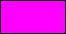
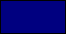
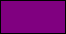
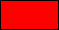
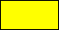

GameMaker Studio 2 bietet eine umfassende Auswahl an Funktionen zum Ändern der Farbe und des Alphas der auf dem Bildschirm gezeichneten Elemente (Informationen zum Mischen von Bildern mit speziellen Mischmodi und anderen PGU-spezifischen Funktionen finden Sie im Abschnitt über die GPU-Steuerung. Mit diesen Funktionen können Sie die Farben voneinander trennen Erstellen Sie in ihren Bestandteilen neue Farben und manipulieren Sie das Zeichen-Alpha, um die Zusammensetzung verschiedener Elemente in Ihrem Spiel zu ändern. Abgesehen von diesen Funktionen gibt es auch eine Reihe von Konstanten, die in diesen (und anderen) als Grundfarben verwendet werden können. Funktionen:
| Konstante | Farbe | Wert |
|---|---|---|
| c_aqua |  | 16776960 |
| c_black |  | 0 |
| c_blue |  | 16711680 |
| c_dkgray | 4210752 | |
| c_fuchsia |  | 16711935 |
| c_gray | 8421504 | |
| c_green |  | 32768 |
| c_lime |  | 65280 |
| c_ltgray |  | 12632256 |
| c_maroon |  | 128 |
| c_navy |  | 8388608 |
| c_olive |  | 32896 |
| c_orange |  | 4235519 |
| c_purple |  | 8388736 |
| c_red |  | 255 |
| c_silver |  | 12632256 |
| c_teal |  | 8421376 |
| c_white | 16777215 | |
| c_yellow |  | 65535 |
Beachten Sie, dass Sie zuvor mit Hilfe des "$" - Symbols auch Farben aus ihrem Hexadezimalwert erstellen können. Diese Werte können auch in den Farbfunktionen verwendet werden, um Komponentenfarbtöne zu erhalten oder zu mischen usw. Der Hexadezimalwert für diese Farben wird geteilt in drei Teile mit dem Format Blau / Grün / Rot, um beispielsweise eine violette Farbe zu definieren, die Sie verwenden könnten:
col = $983c95
Dabei ist 98 die blaue Komponente, 3c die grüne Komponente und 95 die rote Komponente.
Die folgenden Funktionen können verwendet werden, um die Komponentenfarbtöne, den Farbton, die Sättigung und die Leuchtkraft einer ausgewählten Farbe sowie die Alpha- und andere Eigenschaften zu ermitteln:
Mit diesen Funktionen können Farben aus rohen Eingabewerten für Farbkomponenten erstellt werden:
Mit den folgenden Funktionen können Sie verschiedene Optionen für das Zeichnen auf dem Bildschirm einstellen, einschließlich Alpha, Farbe und Überblendung: